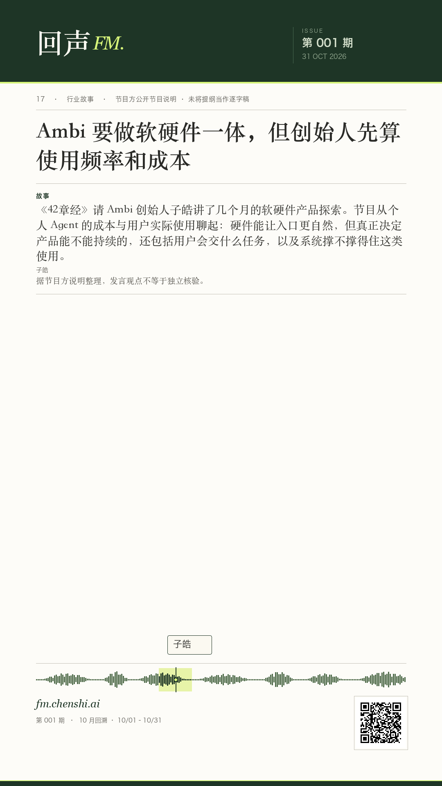

17第 001 期行业故事10.12节目方公开节目说明 · 未将提纲当作逐字稿
Ambi 要做软硬件一体，但创始人先算使用频率和成本
故事
《42章经》请 Ambi 创始人子皓讲了几个月的软硬件产品探索。节目从个人 Agent 的成本与用户实际使用聊起：硬件能让入口更自然，但真正决定产品能不能持续的，还包括用户会交什么任务，以及系统撑不撑得住这类使用。
据节目方说明整理，发言观点不等于独立核验。
节目溯源
42章经
本期
第 001 期 · 31 OCT 2026 · 10 月回溯 · 10/01–10/31
